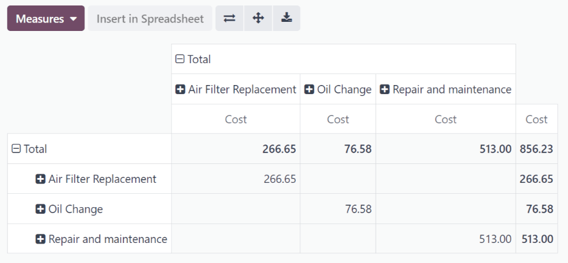

บริการ¶
เพื่อรักษายานพาหนะอย่างเหมาะสมการบำรุงรักษาเป็นประจำและจำเป็นต้องซ่อมแซมเป็นระยะ กองเรือทั้งหมดเป็นสิ่งจำเป็นเพื่อให้แน่ใจว่ายานพาหนะทุกคันทำงานได้ดีเมื่อพวกเขาต้องการ
สร้างบันทึกบริการ¶
หากต้องการเข้าสู่ระบบบริการยานพาหนะไปที่หลัก: Guilabel: `Services 'Dashboard โดยการนำทางไป: Menuselection: `แอพ Fleet -> Fleet ->บริการ ' มุมบนซ้าย
กรอกข้อมูลในแบบฟอร์ม ที่จะมีประชากรคือ: Guilabel: `ประเภทบริการ 'และ: Guilabel:' ยานพาหนะ '
แบบฟอร์มบริการจะบันทึกโดยอัตโนมัติเมื่อป้อนข้อมูล สามารถบันทึกด้วยตนเองได้ตลอดเวลาโดยคลิกที่: guilabel: บันทึกด้วยตนเอง 'ตัวเลือกแสดงโดย A: Guilabel: `(คลาวด์อัปโหลด) ไอคอน
ฟิลด์ในแบบฟอร์มคือ:
: Guilabel: `คำอธิบาย ': ป้อนคำอธิบายสั้น ๆ ของบริการ
: Guilabel:
ประเภทบริการ ': เลือกประเภทของบริการที่ดำเนินการโดยใช้ไฟล์เมนูแบบเลื่อนลง : Guilabel: `สร้าง `หรือ: Guilabel:สร้างและแก้ไข ...ถึง: REF: `เพิ่มประเภทบริการและกำหนดค่า <fleet/new-type>: Guilabel:
date: ใช้หน้าต่างปฏิทิน popover เลือกวันที่มีการให้บริการหรือมีกำหนดจะดำเนินการ เดือนที่ต้องการโดยใช้ไอคอน: guilabel:<> (ลูกศร)จากนั้นคลิกที่วันที่เลือก: Guilabel:
cost: ป้อนค่าบริการ: Guilabel:
ผู้ขาย ': เลือกผู้ขายที่ดำเนินการโดยใช้เมนูแบบเลื่อนลง พิมพ์ชื่อผู้ขายและคลิกอย่างใดอย่างหนึ่ง: guilabel: `createเพื่อเพิ่มพวกเขาหรือ: guilabel: `สร้างและแก้ไข ... ` ถึง: ref: `เพิ่มและกำหนดค่าผู้ขาย<Fleet/New-Vendor> `: Guilabel:
ยานพาหนะ ': เลือกยานพาหนะที่ให้บริการจากแบบเลื่อนลงเมนู. มีประชากรและหน่วยวัดสำหรับ: guilabel: field `odometer value 'ปรากฏ.: guilabel:
driver ': ไดรเวอร์ปัจจุบันที่แสดงรายการสำหรับยานพาหนะที่เลือกคือมีการเลือก: เลือก: guilabel: `ยานพาหนะ 'ถูกเลือก มีการเปลี่ยนแปลงไดรเวอร์อื่นสามารถเลือกได้จากเมนูแบบเลื่อนลง: Guilabel: `` adometer value`: ป้อนการอ่านระยะทางเสร็จแล้ว. ไมล์ (: Guilabel:
mi) ขึ้นอยู่กับว่ายานพาหนะที่เลือกเป็นอย่างไรกำหนดค่าเมื่อเลือก: guilabel: `` ยานพาหนะ 'หน่วยวัดสำหรับฟิลด์นี้มีประชากร
Tip
หากต้องการเปลี่ยนจากกิโลเมตรเป็นไมล์หรือในทางกลับกันคลิก: guilabel:
ปุ่ม Linkny ภายในทางด้านขวาของยานพาหนะที่เลือกในไฟล์: Guilabel: `ยานพาหนะ 'ฟิลด์เปลี่ยนหน่วยการวัดจากนั้นนำทางกลับไปที่แบบฟอร์มบริการผ่านลิงค์ Breadcrumb : Guilabel: `` field value '`ฟิลด์
: Guilabel:
notes: ป้อนบันทึกใด ๆ สำหรับการซ่อมแซมที่ด้านล่างของแบบฟอร์มบริการ

สร้างประเภทบริการ¶
ประเภทบริการจะต้องสร้างจากแบบฟอร์มบริการ เข้าถึงรายการประเภทบริการ
บน: ref: แบบฟอร์มบริการ <fleet/service-form> พิมพ์ชื่อใหม่: Guilabel: `ประเภทบริการ 'ในฟิลด์ที่เกี่ยวข้อง : guilabel: `สร้างและแก้ไข ... ` และ a: guilabel: `สร้างประเภทบริการ 'ป๊อปอัพแบบฟอร์มปรากฏขึ้น
ประเภทบริการที่ป้อนในแบบฟอร์มบริการจะเติมโดยอัตโนมัติ: Guilabel: field ฟิลด์ซึ่งสามารถแก้ไขได้หากต้องการ
จากนั้นเลือก:: guilabel: หมวดหมู่ 'สำหรับประเภทบริการใหม่จากเมนูแบบเลื่อนลงในฟิลด์นั้น : Guilabel: `สัญญา 'หรือ: Guilabel: Service' ** ไม่สามารถสร้างได้ **
หากบริการใช้กับ ** เท่านั้น ** สัญญาหรือบริการให้เลือกไฟล์สอดคล้องกัน: Guilabel: `หมวดหมู่ ' สัญญา * และ * บริการปล่อยให้ฟิลด์นี้ว่างเปล่า
เมื่อเสร็จแล้วคลิก: Guilabel: Save & Close
สร้างผู้ขาย¶
เมื่อบริการเสร็จสิ้นเป็นครั้งแรกโดยทั่วไปผู้ขายจะไม่อยู่ในฐานข้อมูลยัง ในฐานข้อมูลเพื่อให้สามารถเรียกคืนข้อมูลที่จำเป็นได้อย่างง่ายดาย
บน: ref: แบบฟอร์มบริการ <fleet/service-form> พิมพ์ชื่อใหม่: Guilabel: `ผู้ขาย 'ในฟิลด์ที่เกี่ยวข้อง : guilabel: `สร้างและแก้ไข ... ` และ a: guilabel: `สร้างฟอร์มผู้ขาย 'ปรากฏ.
ชื่อผู้ขายที่ป้อนในแบบฟอร์มบริการมี: Guilabel: `name 'ฟิลด์โดยค่าเริ่มต้น
Note
แท็บหรือฟิลด์ที่แตกต่างกันอาจปรากฏบน: Guilabel: `สร้างผู้ขาย 'แบบฟอร์มขึ้นอยู่กับแอปพลิเคชันอื่น ๆ ที่ติดตั้ง
ข้อมูลทั่วไป¶
กรอกข้อมูลต่อไปนี้ในครึ่งบนของแบบฟอร์ม:
: Guilabel:
bersonalor: guilabel:` Company`: เลือกว่าผู้ขายรายใหม่การเพิ่มเป็นบุคคลหรือ บริษัท โดยคลิกที่เกี่ยวข้องปุ่มตัวเลือกเมื่อมีการเลือกบางฟิลด์อาจหายไปจากแบบฟอร์ม ไม่ปรากฏฟิลด์ด้านล่างนั่นเป็นเพราะ: Guilabel: `บริษัท 'คือเลือกแทนที่จะเป็น: Guilabel: `bersonal '
: Guilabel:
name: ป้อนชื่อสำหรับบุคคลหรือ บริษัท ในสาขานี้: Guilabel: `ชื่อ บริษัท ': การใช้เมนูแบบเลื่อนลงเลือก บริษัท ที่ผู้ขายจะเกี่ยวข้องกับถ้ามี
ถ้า: เลือก: guilabel: `` ปุ่มเลือกของ บริษัท ที่ด้านบนของแบบฟอร์มถูกเลือกฟิลด์นี้ไม่ปรากฏ
: Guilabel:
contact: ป้อนข้อมูลการติดต่อในส่วนนี้หากต้องการฟิลด์: guilabel: `` contact 'สามารถเปลี่ยนเป็นประเภทอื่นได้ของการติดต่อ ตัวเลือกที่มีให้เลือกคือ: guilabel:
contact,: guilabel:` ใบแจ้งหนี้address` ,: guilabel:ที่อยู่การจัดส่ง ',: guilabel:ที่อยู่ติดตามผล' หรือ: Guilabel: `ที่อยู่อื่น 'หากต้องการเลือกหนึ่งในตัวเลือกอื่น ๆ เหล่านี้สำหรับ: Guilabel: `contact 'ฟิลด์และป้อนข้อมูลที่เกี่ยวข้อง
ถ้า: guilabel:
บริษัท 'ได้รับเลือกสำหรับ: guilabel:bersonalหรือ: Guilabel:บริษัท 'ฟิลด์ฟิลด์นี้มีป้ายกำกับ: Guilabel:address' และ** ไม่สามารถแก้ไขได้: Guilabel: `รหัสภาษี ': ป้อนรหัสภาษีของผู้ขายในสาขานี้
: Guilabel:
ตำแหน่งงาน ': ป้อนตำแหน่งงานของผู้ขายในสาขานี้ : ปุ่มตัวเลือก Guilabel: `บริษัท 'ที่ด้านบนของแบบฟอร์มถูกเลือกฟิลด์นี้ไม่ปรากฏ: Guilabel: `โทรศัพท์ ': ป้อนหมายเลขโทรศัพท์ของผู้ขายในฟิลด์นี้
: Guilabel:
mobile: ป้อนหมายเลขโทรศัพท์มือถือของผู้ขายในฟิลด์นี้: Guilabel: `อีเมล ': ป้อนที่อยู่อีเมลของผู้ขายในฟิลด์นี้
: Guilabel: `เว็บไซต์ ': ป้อนที่อยู่เว็บไซต์ของผู้ขายในสาขานี้
: Guilabel:
title: การใช้เมนูแบบเลื่อนลงเลือกชื่อผู้ขายในฟิลด์นี้ : Guilabel:Miss,: Guilabel:` Mister` และ: Guilabel: `ศาสตราจารย์ 'ถ้า: เลือก: guilabel: `` ปุ่มเลือกของ บริษัท ที่ด้านบนของแบบฟอร์มถูกเลือกฟิลด์นี้ไม่ปรากฏ
: guilabel:
tags: การใช้เมนูแบบเลื่อนลงเลือกแท็กใด ๆ ที่ใช้กับผู้ขายหากต้องการเพิ่มแท็กใหม่ให้พิมพ์ในแท็กจากนั้นคลิก: Guilabel: `Create -
ไม่มีการ จำกัด จำนวนแท็กที่สามารถเลือกได้
: Guilabel:
image: ภาพถ่ายของบุคคลที่ติดต่อหลักหรือ บริษัทโลโก้สามารถเพิ่มลงในแบบฟอร์ม ในแบบฟอร์มด้านบนขวาเพื่อเปิดเผย: Guilabel:✏ (ดินสอ)ไอคอนและคลิก คลิก: Guilabel:Openเพื่อเลือก

แท็บผู้ติดต่อและที่อยู่¶
หลังจากครึ่งบนของ: guilabel: สร้างแบบฟอร์มผู้ขาย กรอกแล้วเพิ่มเพิ่มผู้ติดต่อและที่อยู่อื่น ๆ ที่เกี่ยวข้องกับผู้ขายในแท็บนี้
คลิกปุ่ม: Guilabel: `เพิ่ม 'เพื่อเพิ่มผู้ติดต่อใหม่และก: Guilabel: `สร้างหน้าต่างป๊อปอัพที่ติดต่อจะปรากฏขึ้น
เลือกหนึ่งในตัวเลือกประเภทผู้ติดต่อที่เหมาะสมจากปุ่มตัวเลือกตั้งอยู่ที่ด้านบนของหน้าต่างป๊อปอัพ
: Guilabel:
contact: เลือกตัวเลือกนี้เพื่อเพิ่มรายละเอียดการติดต่อทั่วไปสำหรับพนักงานของผู้ขายที่เกี่ยวข้อง: Guilabel: `ที่อยู่ใบแจ้งหนี้ ': เลือกตัวเลือกนี้เพื่อเพิ่มที่อยู่ที่ต้องการสำหรับใบแจ้งหนี้ทั้งหมด ค่าเริ่มต้นเมื่อส่งใบแจ้งหนี้ไปยังผู้ขายที่เกี่ยวข้อง
: Guilabel: `ที่อยู่การส่งมอบ ': เลือกตัวเลือกนี้เพื่อเพิ่มที่อยู่ที่ต้องการสำหรับการส่งมอบทั้งหมด ค่าเริ่มต้นเมื่อส่งคำสั่งซื้อไปยังผู้ขายที่เกี่ยวข้อง
: Guilabel: `ที่อยู่ติดตามผล ': เลือกตัวเลือกนี้เพื่อเพิ่มที่อยู่ที่ต้องการสำหรับการติดต่อติดตามทั้งหมด เลือกโดยค่าเริ่มต้นเมื่อส่งการแจ้งเตือนเกี่ยวกับใบแจ้งหนี้ที่เกินกำหนด
: Guilabel: `ที่อยู่อื่น ๆ ': เลือกตัวเลือกนี้เพื่อเพิ่มที่จำเป็นอื่น ๆที่อยู่สำหรับผู้ขาย
Note
หากตัวเลือก * นอกเหนือจาก *: Guilabel: contact ถูกเลือกสำหรับผู้ติดต่อพิมพ์ส่วน: Guilabel: `address 'ปรากฏขึ้นในแบบฟอร์ม รายละเอียดในส่วน: Guilabel: `address '
เพิ่มหมายเหตุใด ๆ ลงใน: Guilabel: `บันทึกภายใน ... ` ส่วนของแบบฟอร์ม
หลังจากเพิ่มข้อมูลทั้งหมดให้คลิก: Guilabel: save & Close`หากต้องการเพิ่มผู้ติดต่อใหม่หนึ่งรายหรือ: Guilabel: `save & new เพื่อเพิ่มปัจจุบันบันทึกที่อยู่และสร้างบันทึกที่อยู่อื่น
เมื่อมีการเพิ่มผู้ติดต่อลงในแท็บนี้ผู้ติดต่อแต่ละรายจะปรากฏในกล่องแยกต่างหากด้วยไอคอนที่ระบุว่าประเภทของผู้ติดต่ออยู่ในรายการ
Example
ตอบ: Guilabel: ที่อยู่การส่งมอบ 'แสดง A: Guilabel: ⛟ (รถบรรทุก) ไอคอนภายในกล่องที่อยู่เฉพาะนั้นในขณะที่: Guilabel: `ที่อยู่ใบแจ้งหนี้ 'แสดง a: Guilabel: `💵 (ดอลลาร์ดอลลาร์) ไอคอนภายใน
แท็บการขายและการซื้อ¶
ป้อนข้อมูลการขายและการจัดซื้อต่อไปนี้สำหรับต่างๆส่วนด้านล่าง เขตข้อมูลและส่วนอาจปรากฏขึ้น * แอปพลิเคชัน* แอปพลิเคชันเท่านั้น
ฝ่ายขาย¶
: Guilabel: `พนักงานขาย ': การใช้เมนูแบบเลื่อนลงเลือกผู้ใช้เป็นหลักจุดติดต่อเพื่อขายกับผู้ขายรายนี้
บุคคลนี้ ** ต้องเป็นผู้ใช้ภายในของ บริษัท ซึ่งหมายความว่าพวกเขาสามารถทำได้เข้าสู่ฐานข้อมูลในฐานะผู้ใช้
ผิด¶
: guilabel:
id company: หาก บริษัท มีหมายเลขรหัส ** นอกเหนือจาก ***รหัสภาษี*ป้อนไว้ในฟิลด์นี้: Guilabel:
Referment: ป้อนข้อความใด ๆ เพื่อให้ข้อมูลเพิ่มเติมเกี่ยวกับติดต่อ.Example
บริษัท มีหลายคนที่มีชื่อเดียวกันแมรี่โจนส์ : guilabel:
field referentฟิลด์สามารถระบุ` Mary Jones ได้ที่ x108 - returns`ให้รายละเอียดเพิ่มเติม
แท็บหมายเหตุภายใน¶
เพิ่มบันทึกใด ๆ ที่เกี่ยวข้องกับผู้ขายหรืออื่น ๆ ที่จำเป็นข้อมูลในแท็บนี้
รายการบริการ¶
หากต้องการดูบริการทั้งหมดที่บันทึกไว้ในฐานข้อมูลรวมถึงคำขอเก่าและใหม่นำทางไปที่: เมนูการเลือก: แอป Fleet -> Fleet -> Services ปรากฏในมุมมองรายการรวมถึงรายละเอียดทั้งหมดสำหรับแต่ละบริการ
บันทึกบริการถูกจัดกลุ่มโดย: ref: ประเภทบริการ <fleet/new-type> จำนวนการซ่อมแซมสำหรับแต่ละประเภทบริการจะปรากฏในวงเล็บหลังจากชื่อประเภทบริการ
บริการแต่ละรายการแสดงข้อมูลต่อไปนี้:
: Guilabel:
date: วันที่ที่ให้บริการหรือซ่อมแซมดำเนินการ (หรือขอให้ดำเนินการ): Guilabel: `คำอธิบาย ': คำอธิบายสั้น ๆ ของประเภทเฉพาะของบริการหรือซ่อมแซมดำเนินการเพื่อชี้แจงบริการเฉพาะ
: Guilabel: `ประเภทบริการ ': ประเภทของบริการหรือซ่อมแซมดำเนินการ เลือกจากรายการบริการที่: ref: `ต้องกำหนดค่า <fleet/new-พิมพ์> `
: Guilabel: `ยานพาหนะ ': ยานพาหนะเฉพาะที่ใช้บริการ
: Guilabel: `Driver ': ไดรเวอร์ปัจจุบันสำหรับยานพาหนะ
: Guilabel: `ผู้ขาย ': ผู้ขายเฉพาะที่ดำเนินการบริการหรือซ่อมแซม.
: Guilabel:
notes: ข้อมูลใด ๆ ที่เกี่ยวข้องกับบริการหรือการซ่อมแซมที่บันทึกไว้เพื่อเพิ่มคำชี้แจง: Guilabel:
cost: ค่าใช้จ่ายทั้งหมดของการบริการหรือการซ่อมแซม: Guilabel:
Stage: สถานะของบริการหรือซ่อมแซม : Guilabel:new,: guilabel:` Running` ,: guilabel: `เสร็จแล้ว 'หรือ: Guilabel: `ยกเลิก '
ที่ด้านล่างของ: Guilabel: cost คอลัมน์ค่าใช้จ่ายทั้งหมดของบริการทั้งหมดและการซ่อมแซมมีการระบุไว้
ดูบริการ¶
ขอแนะนำให้ดูรายการบริการในหนึ่งในหลาย ๆ ล่วงหน้าวิธีการกำหนดค่าเพื่อดูข้อมูลที่นำเสนอให้ดีขึ้น มุมของรายการมีหลายไอคอนที่เมื่อคลิกจัดเรียงข้อมูลในรูปแบบที่แตกต่างกัน

รายการมุมมอง¶
มุมมองเริ่มต้นของบันทึกบริการคือมุมมองรายการ บริการที่จัดกลุ่มตัวอักษรแรกตามประเภทของบริการจากนั้นจัดกลุ่มตามสถานะ
ข้อมูลสามารถจัดเรียงใหม่ได้โดยคอลัมน์ใด ๆ วางเมาส์เหนือชื่อคอลัมน์และลูกศรจะปรากฏขึ้นในทางขวาสุดของสิ่งนั้นคอลัมน์.
การเรียงลำดับเริ่มต้นอยู่ในลำดับตัวอักษรจากมากไปน้อย (a ถึง z)แสดงโดย A: Guilabel: ⌄ (ลูกศรลง) ไอคอน (ลูกศรลง) ไอคอนเพื่อย้อนกลับลำดับตัวอักษร (Z ถึง A) : Guilabel: `⌄ (ลูกศรลง) ไอคอนเปลี่ยนเป็น: guilabel: ^ (ลูกศรขึ้น) ไอคอน
ข้อยกเว้นสองข้อสำหรับการเรียงลำดับนี้คือค่าเริ่มต้น: Guilabel: date 'คอลัมน์คอลัมน์และคอลัมน์ Guilabel: `cost ข้อมูลตามลำดับเวลา (มกราคมถึงธันวาคม) แทนที่จะเป็นลำดับตัวอักษร ราคาซ่อมจากต่ำสุดไปสูงสุด
เพิ่มบริการ¶
หากต้องการเพิ่มระเบียนบริการจากมุมมองรายการให้คลิกที่: Guilabel: `ใหม่ 'ปุ่มและแบบฟอร์มบริการโหลด <fleet/service-form> `ในแบบฟอร์มบริการ
แบบฟอร์มจะบันทึกโดยอัตโนมัติเมื่อป้อนข้อมูล
มุมมอง Kanban¶
หากต้องการดูบริการตามขั้นตอนของพวกเขาคลิกปุ่ม: Guilabel: `` Kanban` ซึ่งเป็นไอคอนที่สองในมุมบนขวาและปรากฏเป็นสองที่แตกต่างกันแถบความยาวใต้เส้น
บริการทั้งหมดถูกจัดระเบียบตามประเภทบริการและปรากฏในที่เกี่ยวข้องคอลัมน์ Kanban
จำนวนการซ่อมแซมสำหรับบริการแต่ละประเภทจะปรากฏในทางขวาสุดของส่วนหัวคอลัมน์ Kanban แต่ละตัว
สถานะโดยรวมของกิจกรรมที่กำหนดไว้สำหรับแต่ละประเภทบริการปรากฏในแถบรหัสสีใต้ชื่อคอลัมน์ Kanban แต่ละชื่อ ด้วยกิจกรรมที่กำหนดไว้ในอนาคตจะปรากฏเป็นสีเขียวกิจกรรมที่ครบกำหนดวันนี้ปรากฏกิจกรรมสีเหลืองกิจกรรมที่เกินกำหนดปรากฏเป็นสีแดงและซ่อมแซมโดยไม่มีกิจกรรมกำหนดเวลาปรากฏเป็นสีเทา
การ์ด Kanban แต่ละใบแสดงไอคอนที่เกี่ยวข้องกับกิจกรรมสีเช่น: Guilabel: 🕘 (นาฬิกา) ไอคอนหรือ: Guilabel: 📞 (โทรศัพท์) ไอคอนตัวอย่างเช่น ไอคอนระบุทั้งประเภทของกิจกรรมที่กำหนดเวลาและสถานะ สถานะของกิจกรรมสอดคล้องกับสีในแถบสถานะ ไอคอนกิจกรรมเพื่อดูรายละเอียดของกิจกรรมเฉพาะนั้น
ความยาวของแถบสีนั้นเป็นสัดส่วนกับจำนวนที่เกี่ยวข้องกิจกรรมที่มีสถานะเฉพาะนั้นในขั้นตอนนั้น ส่วนสีเพื่อเปิดเผยจำนวนระเบียนบริการในเฉพาะนั้นการจัดกลุ่ม

หากต้องการดู ** เท่านั้น ** บันทึกที่มีสถานะเฉพาะคลิกสีที่ต้องการส่วนบาร์ สีเดียวกัน (ไม่ว่าจะเป็นสีเขียวสีเหลืองแดงหรือสีเทา) และแถบสีปรากฏลายทางแทนที่จะเป็นของแข็ง สถานะที่เลือกจะปรากฏในคอลัมน์

กำหนดการกิจกรรม¶
หากต้องการกำหนดเวลากิจกรรมสำหรับการซ่อมแซมหรือบริการจากมุมมอง Kanban คลิกไอคอนกิจกรรมที่มุมล่างขวาของบันทึกบริการและคลิก: Guilabel: `+ กำหนดการกิจกรรม ' หน้าต่างปรากฏขึ้น
Note
ขึ้นอยู่กับกิจกรรมประเภทใดถ้ามีกำหนดไว้ไอคอนกิจกรรมอาจปรากฏแตกต่างกัน การโทรมีกำหนดเวลาหรือ:: guilabel: ✉ (ซองจดหมาย) จะปรากฏขึ้นหากอีเมลมีกำหนด
ป้อนข้อมูลต่อไปนี้ในแบบฟอร์ม:
: Guilabel:
ประเภทกิจกรรม ': การใช้เมนูแบบเลื่อนลงเลือกกิจกรรมถูกกำหนด : Guilabel: `Call,: Guilabel:` การประชุม ',: Guilabel:to-doและ: Guilabel: `อัปโหลดเอกสาร ': guilabel:
summary: ป้อนคำอธิบายสั้น ๆ ของกิจกรรมเช่น`กำหนดการเปลี่ยนน้ำมัน ': Guilabel: `วันครบกำหนด ': การใช้ปฏิทินป๊อปโอเวอร์เลือกวันที่กิจกรรมจะต้องเสร็จสิ้น (ขวา) `ไอคอนลูกศรนำทางไปยังเดือนที่ต้องการจากนั้นคลิกที่วันที่เพื่อเลือก
: Guilabel: `ที่ได้รับมอบหมายให้ ': การใช้เมนูแบบเลื่อนลงเลือกผู้ใช้รับผิดชอบกิจกรรม
: Guilabel:
notes: เพิ่มบันทึกหรือรายละเอียดใด ๆ ในพื้นที่ว่างในด้านล่าง-ครึ่งหนึ่งของแบบฟอร์ม
เมื่อ: Guilabel: กำหนดการกิจกรรม 'เสร็จสิ้นให้คลิก: Guilabel: `กำหนดการ 'เพื่อกำหนดเวลากิจกรรมหรือคลิก: Guilabel: เสร็จแล้ว &กำหนดเวลาถัดไปเพื่อกำหนดเวลากิจกรรมปัจจุบันและกำหนดเวลาอีกกิจกรรมสำหรับการซ่อมแซมเดียวกัน
See also
สำหรับข้อมูลรายละเอียดเพิ่มเติมเกี่ยวกับกิจกรรมอ้างอิงหลัก: เอกสาร: กิจกรรม <../../ สิ่งจำเป็น/กิจกรรม> เอกสาร
เพิ่มบริการ¶
สามารถเพิ่มการซ่อมแซมใหม่ได้จากมุมมองนี้ ไอคอน) `ในมุมบนขวาของคอลัมน์ Kanban และบล็อกใหม่จะปรากฏขึ้นที่ด้านบนของคอลัมน์ใต้ชื่อ Kanban
ป้อน A: Guilabel: title สำหรับบริการหรือซ่อมแซมจากนั้นคลิก: Guilabel: add หน้าต่าง. แบบฟอร์มจากนั้นคลิก: Guilabel: save & Close เพื่อเพิ่มบันทึก ตอนนี้ปรากฏในคอลัมน์ Kanban
มุมมองกราฟ¶
อีกวิธีหนึ่งในการดูข้อมูลอยู่ในกราฟ คลิกที่ไอคอน: guilabel: `กราฟ 'ซึ่งเป็นไอคอนที่สามในด้านบนขวาและปรากฏเป็นกราฟขนาดเล็ก
มุมมองกราฟเริ่มต้นแสดงข้อมูลบริการในแถบซ้อนกันแผนภูมิจัดกลุ่มโดย: Guilabel: ประเภทบริการ ' : Guilabel: `ประเภทบริการ 'และแกน y หมายถึง:: guilabel: cost'
แต่ละคอลัมน์แสดงถึงค่าใช้จ่ายทั้งหมดสำหรับการซ่อมแซมและบริการทั้งหมดสำหรับเฉพาะนั้น: Guilabel: ประเภทบริการ ' หน้าต่างป๊อปโอเวอร์ที่แสดงผลรวม: Guilabel: `cost สำหรับบริการและซ่อมแซมบาร์หมายถึง
กราฟสามารถเปลี่ยนเป็น A: Guilabel: Line Chart หรือ A: Guilabel:` พายแผนภูมิ 'โดยคลิกที่ปุ่มที่เกี่ยวข้องด้านบนกราฟ กราฟสามารถแสดงข้อมูลได้ใน: Guilabel: stacked: guilabel: detcending หรือ: guilabel:` ascending` order โดยคลิกที่ปุ่มที่สอดคล้องกัน
มุมมองเดือย¶
อีกวิธีหนึ่งในการดูข้อมูลบริการอยู่ในตารางเดือยสเปรดชีต ไอคอน: guilabel: pivot ซึ่งเป็นไอคอนที่สี่ในด้านบนขวาและปรากฏเป็นสเปรดชีตขนาดเล็ก
วิธีเริ่มต้นที่ข้อมูลแสดงแสดงค่าใช้จ่ายทั้งหมดของแต่ละประเภทบริการ. ประเภทบริการที่แตกต่างกันในบรรทัดของตัวเอง ค่าใช้จ่ายทั้งหมดสำหรับบริการแต่ละประเภทโดยเฉพาะแบ่งตามประเภทของบริการ.
ตารางสามารถแทรกในสเปรดชีตหรือดาวน์โหลดได้หากต้องการ
เพื่อเพิ่มตารางเดือยลงในสเปรดชีตใน Odoo ก่อนอื่นการปรากฏตัวของตารางเดือยต้องเปลี่ยน ที่จะแทรกลงในสเปรดชีต (:: guilabel: `แทรกในสเปรดชีต 'ปุ่มเป็นสีเทา)
ก่อนอื่นให้คลิกที่: Guilabel: ➖ (ลบ) ไอคอนทางด้านซ้ายของ: Guilabel: Total 'ที่ด้านบนของตารางเดือย มีเพียงซิงเกิ้ล: Guilabel: `cost column สามารถมองเห็นได้
จากนั้นคลิกปุ่ม: guilabel: แทรกในปุ่มสเปรดชีต 'ซึ่งไม่ได้อีกต่อไปสีเทาและ A: Guilabel: `เลือกสเปรดชีตเพื่อแทรกของคุณหน้าต่างป๊อปอัพปรากฏขึ้น : guilabel: `แท็บสเปรดชีต แท็บและ a: guilabel: `แท็บแดชบอร์ด '
คลิกที่แท็บที่ต้องการเพื่อระบุว่าควรวางสเปรดชีตไว้ที่ไหนไม่ว่าจะเป็น: Guilabel: สเปรดชีต 'หรือบน: Guilabel: Dashboard` คลิกตัวเลือกที่ต้องการคลิก: Guilabel: `ยืนยัน ' โหลดบนหน้าจอ
Note
สเปรดชีตจะถูกเก็บไว้ในแอปพลิเคชัน * เอกสาร * ของ Odoo ในขณะที่แดชบอร์ดถูกเก็บไว้ในแอปพลิเคชัน * Dashboards * ของ Odoo
คลิก: Guilabel: Services ที่มุมบนซ้ายเพื่อนำทางกลับไปที่มุมมองตารางเดือยก่อนหน้า
หากต้องการดาวน์โหลดตารางในรูปแบบ * XLSX * คลิกไอคอนดาวน์โหลด XLSXแสดงโดย A: Guilabel: ⬇ (ลูกศรลงเหนือบรรทัด) ไอคอน
See also
สำหรับข้อมูลรายละเอียดเพิ่มเติมเกี่ยวกับการรายงานอ้างอิงหลัก: DOC: การรายงาน <../../ สิ่งจำเป็น/การรายงาน> เอกสาร
มุมมองกิจกรรม¶
หากต้องการดูกิจกรรมที่กำหนดไว้สำหรับบริการหรือซ่อมแซมให้คลิก: Guilabel: 🕗 (นาฬิกา) ไอคอนกิจกรรมที่มุมบนขวาของหน้าจอสิ่งนี้นำเสนอกิจกรรมทั้งหมดที่จัดโดยยานพาหนะและประเภทกิจกรรม
คอลัมน์แนวตั้งถูกจัดระเบียบตามประเภทกิจกรรมและแนวนอนเส้นถูกจัดระเบียบโดยยานพาหนะ
รายการมีรหัสสีตามสถานะของแต่ละกิจกรรม กิจกรรมมีกำหนดในอนาคตกิจกรรมสีเหลืองจะครบกำหนดในวันนี้และกิจกรรมสีแดงเกินกำหนด
ผู้ใช้ที่รับผิดชอบกิจกรรมจะปรากฏในภาพถ่ายในทางซ้ายล่างมุมของแต่ละกิจกรรม
วันที่ครบกำหนดของแต่ละกิจกรรมจะถูกเขียนขึ้นเป็นศูนย์กลางของแต่ละกิจกรรมรายการ.
แถบรหัสสีที่ด้านบนของแต่ละคอลัมน์กิจกรรมระบุสถานะของกิจกรรมภายในคอลัมน์นั้น
จำนวนกิจกรรมสำหรับแต่ละประเภทกิจกรรมถูกเขียนทางด้านขวาของแถบรหัสสีใต้ชื่อคอลัมน์

กำหนดกิจกรรม¶
หากต้องการเพิ่มระเบียนบริการจากมุมมองกิจกรรมคลิก: Guilabel: + กำหนดการกิจกรรม `ที่มุมล่างซ้ายของรายการและ a: guilabel: search:โหลดหน้าต่างป๊อปอัพ กำหนดเวลาสำหรับและ a: guilabel: `ตารางกิจกรรม 'โหลดแบบฟอร์ม
: REF: ป้อนข้อมูลทั้งหมด <fleet/schedule-Ctivity- กิจกรรม> ในกิจกรรมรูปร่าง.
เมื่อแบบฟอร์มเสร็จสมบูรณ์ให้คลิกปุ่ม: guilabel: `ตารางตาราง ' ปิดหน้าต่างป๊อปอัพและตอนนี้กิจกรรมจะปรากฏในมุมมองกิจกรรม